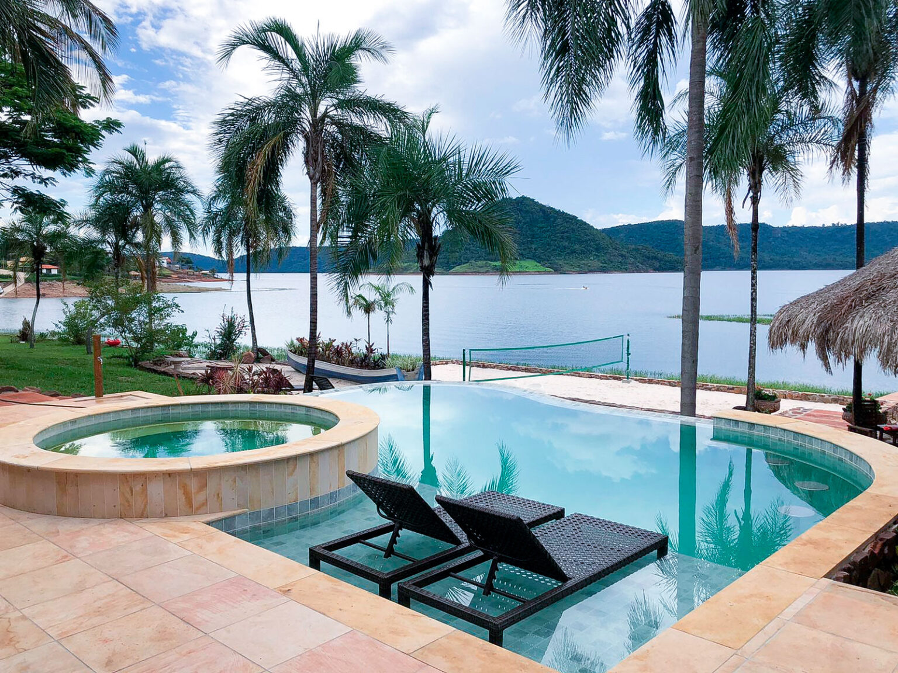

Local selecionado

Ilha do Béca
A Ilha do Béca é um dos pontos turísticos mais encantadores de Ribeirão Claro. Localizada na
Represa de Chavantes, é ideal para quem busca lazer e contato com a natureza. O local oferece
áreas para banho, passeios de barco e momentos de descanso em meio a paisagens deslumbrantes.
R877+8C Ribeirão Claro, Paraná
Telefone: (14) 99770-3996.
Faça sua Reseva